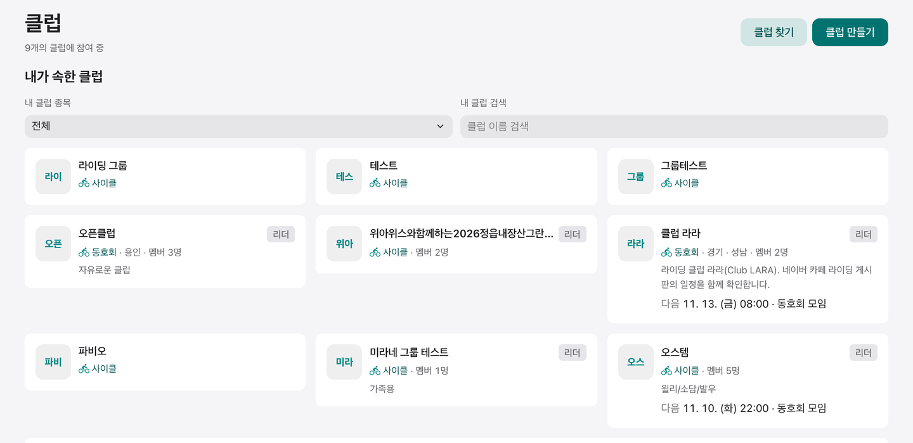
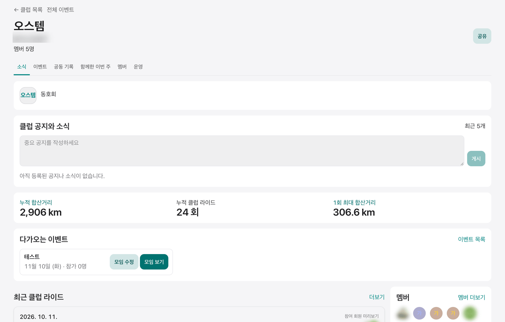
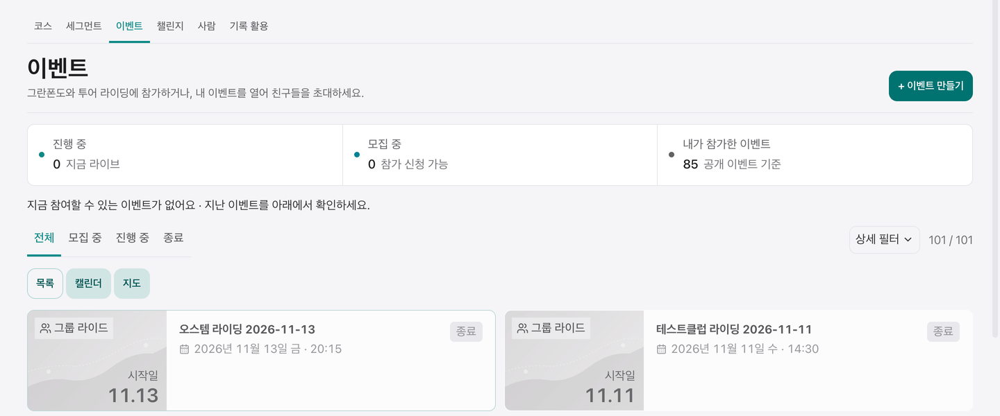
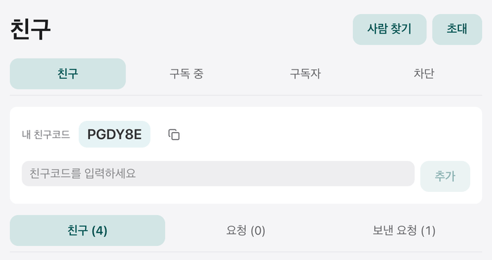

5. 클럽·친구·이벤트
이 장에서 할 수 있는 것
- 클럽에 가입하거나 만들고, 클럽 안에서 소식·공동 기록·이번 주 순위를 봅니다.
- 친구 코드나 탐색 > 사람 검색으로 친구를 맺고, 친구의 공개 기록을 피드에서 봅니다.
- 클럽 모임을 실내·실외로 나눠 만들고, 멤버가 참석 신청합니다. 모임 화면에서 조편성·공지·Discord 음성·가상주행 관전·결과 확인까지 이어집니다.
- 이벤트(그란폰도·투어)를 찾아 참가하고, 진행 중인 이벤트를 실시간으로 지켜봅니다.
5.1 클럽 목록 — 가입하기

따라 하기
- 위쪽 메뉴 클럽을 엽니다. 맨 위에 "N개의 클럽에 참여 중"이 보입니다.
- 내가 속한 클럽에서 내 클럽 종목과 내 클럽 검색으로 내 클럽을 찾습니다. 카드의 "리더"는 내가 운영하는 클럽이라는 표시입니다.
- 새 클럽을 찾으려면 클럽 찾기(오른쪽 위 버튼 또는 아래 구역)에서 이름·활동 지역을 넣고 종목(전체 · 사이클 · 러닝 · 수영 · 통합)을 고릅니다. 이미 가입한 클럽은 이 목록에 나오지 않습니다.
- 마음에 드는 공개 클럽 카드의 가입 신청을 누릅니다. 자동 승인 클럽은 "가입했어요" 알림과 함께 바로 내가 속한 클럽으로 옮겨집니다. 수동 승인 클럽은 버튼이 승인 대기로 바뀌고, 클럽장이 승인하면 가입이 끝납니다.
- 운영자에게 초대 코드를 받았다면 아래 초대 코드로 가입에 넣고 가입을 누릅니다. 초대 링크를 받았다면 링크만 열어도 됩니다.
로그인하지 않아도 공개 클럽 목록과 클럽 소개(종류·활동 지역·종목·가입 승인 방식)를 볼 수 있고, 가입하려면 로그인합니다. 로그인한 뒤 가입하지 않은 공개 클럽을 열면 소개·규칙·다가오는 이벤트와 함께 "가입하면 소식과 함께 탄 기록을 볼 수 있어요" 안내, 클럽 가입 버튼이 나옵니다. 비공개 클럽은 초대 링크로 가입했거나 멤버 권한이 있는 계정으로만 볼 수 있고, 권한이 없으면 "비공개 클럽입니다" 안내가 나옵니다.
보낸 가입 요청은 가입 요청 이력에 남고, 승인 전이라면 요청 취소로 거둘 수 있습니다. 내 클럽 카드에는 이번주 활동과 다음 이벤트가 함께 보입니다.
5.2 클럽 안의 메뉴

클럽을 열면 클럽 이름과 멤버 수 아래에 클럽 메뉴가 있습니다. 왼쪽 위 ← 클럽 목록 · 전체 이벤트로 다른 곳에 가고, 오른쪽 위 공유로 클럽 링크를 보냅니다.
| 메뉴 | 보이는 것 |
|---|---|
| 소식 | 클럽 규칙, 클럽 공지와 소식(운영진은 공지를 쓰고 게시), 누적 합산거리 · 누적 클럽 라이드 · 1회 최대 합산거리, 이번 달 팀 거리 목표, 다가오는 이벤트, 최근 클럽 라이드, 멤버, 클럽 정보(개설일) |
| 이벤트 | 클럽의 모임과 대회를 한 목록에서 봅니다(아래). 모임 만들기(5.5)와 캘린더 구독도 여기서 합니다. |
| 공동 기록 | 같은 날 함께 달린 라이딩을 묶어 멤버별 기록을 비교합니다(아래). 사이클 클럽에만 있습니다. |
| 함께한 이번 주 | 이번 주 순위 (5.3) |
| 멤버 | 멤버 목록과 역할(리더 · 부리더 · 멤버), 초대 링크 |
| 운영 | 클럽 프로필, 공개 & 가입, 권한 & 알림, 월간 팀 거리 목표, 클럽 삭제. 클럽을 만든 사람과 리더·부리더에게만 보입니다. |
주최자는 소식의 다가오는 이벤트 카드에서 바로 모임 수정(대회는 이벤트 정보 수정)을 누를 수 있습니다. 멤버는 같은 카드에서 모임 보기나 참가 신청을 누릅니다.
이벤트 탭 — 모임과 대회 한 목록
- 클럽 안에서 이벤트를 엽니다. 위쪽에 모임 만들기, 캘린더 구독(공개 클럽에서 운영의 이벤트 캘린더 구독을 켜 둔 경우), 클럽을 만든 사람에게는 대회 만들기가 있습니다.
- 전체 · 모집 중 · 진행 중 · 종료 · 취소 버튼으로 상태를 고릅니다. 모임과 대회가 날짜순으로 함께 나오고, 카드 맨 위에 모임 또는 대회로 구분됩니다.
- 모임 카드에서 제목을 눌러 모임 화면(5.9)을 열거나 가상주행 관전을 누릅니다. 내가 주최한 모임에는 모임 수정이 함께 보입니다.
- 대회 카드에서는 이벤트 보기 · 참가 신청 · 확인 · 취소로 이어지고, 주최자에게는 이벤트 정보 수정이, 끝난 대회에는 결과 보기가 보입니다.
동호회 카페와 일정을 연동한 일부 클럽은 이벤트 탭(가입 전에는 클럽 소개 화면)에 네이버 카페 라이딩 일정이 함께 나옵니다. 목록 · 달력으로 보기를 바꾸고, 라이딩 스타일(정기 · 번개 · 투어 · 새벽 · 출퇴근 · 대회 · 기타)로 거를 수 있습니다. 상세 안내와 참가 신청은 카페 바로가기로 카페 원문에서 합니다.
공동 기록 — 함께 달린 기록 비교
- 공동 기록에서 활동 기록 수(전체 · N개+)로 거르고 라이드를 엽니다.
- 지도·흐름에 표시할 기록에서 색깔 체크박스로 비교할 사람을 고릅니다. 지도·차트·표에 같은 선택이 적용됩니다.
- 흐름 비교 기준을 이동거리 또는 시간 (실제 시각)으로 바꿔 라이딩 성능 비교 차트를 봅니다. 차트 위를 끌어 구간을 확대하면 지도에도 그 구간이 강조되고, 아래 표에 선택 지점 순간값과 구간 평균이 나옵니다.
이동거리 기준은 각자 출발점부터 잰 거리라, 같은 거리라도 같은 도로 지점이 아닐 수 있습니다. 함께 출발한 그룹 라이딩은 시간 (실제 시각)으로 보면 누가 언제 앞섰는지 읽기 쉽습니다.
5.3 함께한 이번 주 — 클럽 순위 (옛 리더보드)
- 클럽 안에서 함께한 이번 주를 누릅니다.
- 이동거리 · 활동시간 · 획득고도 중 기준을 골라 멤버 순위를 봅니다.
- 위쪽 활동 멤버 / 전체와 함께한 라이딩 수로 이번 주 클럽 분위기를 봅니다.
집계는 함께한 공개 활동만 셉니다. 주는 월요일 0시(한국 시간)에 새로 시작합니다. 내 기록이 빠졌다면 그 활동의 공개 범위를 확인하세요.
| 이렇게 보이면 | 생각해 볼 것 |
|---|---|
| 활동 멤버가 절반 아래 | 함께 달리는 날을 공지해 볼 때입니다. |
| 상위 몇 명만 거리가 많음 | 초보 멤버가 낄 수 있는 쉬운 코스를 섞어 봅니다. |
| "이번 주 함께한 활동이 없어요" | 아직 이번 주 공개 활동이 없다는 뜻입니다. |
5.4 클럽 만들기
- 클럽 화면 오른쪽 위 클럽 만들기(또는 + 만들기 > 클럽 만들기)를 누릅니다.
- 기본 정보 → 규칙 & 공개 → 확인·만들기 3단계를 따라갑니다. 공개 여부와 가입 승인 방식을 여기서 정합니다.
- 만든 뒤 멤버 화면에서 초대 링크를 공유합니다. 소개·규칙·공개 범위는 나중에 운영에서 바꿉니다.
5.5 클럽 모임 만들기
클럽 멤버끼리 함께 탈 날을 정해 모집합니다. 클럽 멤버라면 누구나 만들 수 있고, 만든 사람이 그 모임의 주최자가 됩니다.
따라 하기
- 클럽 안에서 이벤트를 열고 모임 만들기를 누릅니다. 모임 준비하기 화면이 열립니다.
- 1. 코스부터 준비해요에서 기존 코스 가져오기 · GPX로 준비하기 · 세그먼트로 준비하기 중 하나로 함께 달릴 길을 연결합니다. 코스가 아직 정해지지 않았다면 나중에 연결해도 됩니다.
- 2. 모임을 알려주세요에서 모임 이름을 넣고 실내 / 실외를 고릅니다(필수, 아래 표).
- 모임 종류(번개 · 투어 · 다른 종류), 정원, 날짜, 집결 시각, 기본 집결 장소를 넣습니다. 집결 시각은 지금보다 뒤로만 정할 수 있습니다.
- 필요하면 모집 소개, 코스 소개·수동 보정, 합류·이동 안내, 비용을 채웁니다.
- 모집글 미리보기를 누르고, 날짜·시각 확인에 체크한 뒤 모집 시작을 누릅니다.
- 멤버는 모임 화면에서 참석 신청을 누릅니다. 정원이 차면 대기 신청으로 접수되고, 자리가 나면 차례대로 자리가 제안됩니다(5.9).
만든 모임은 주최자가 모임 화면의 모임 수정, 또는 이벤트 탭·소식의 다가오는 이벤트 카드에 있는 모임 수정으로 바로 고칩니다. 지난 모임을 바탕으로 새 모임을 열 때는 모임 화면 모임 운영의 복사해 새 모임을 씁니다.
실내와 실외는 무엇이 다른가요
| 고른 값 | 앱에서 달라지는 것 |
|---|---|
| 실내 | 앱 라이딩 탭의 실내 라이딩 준비 화면 신청한 모임에 나타납니다. 출발 30분 전부터 출발 대기를 할 수 있고, 예정 시각이 되면 대기한 사람이 함께 자동으로 출발합니다. 모임 코스를 가상 코스로 달리므로 코스를 꼭 연결해야 합니다. |
| 실외 | 야외에서 모여 달립니다. 실내 준비 화면 목록에는 나오지 않고, 각자 앱에서 실외 라이딩으로 시작해 기록합니다. |
실내·실외 구분이 생기기 전에 만든 모임은 수정할 때 실내 / 실외를 골라야 저장됩니다. 고르기 전까지는 실내 준비 화면의 신청한 모임에 함께 보일 수 있습니다.
실내 모임은 끊기지 않고 한 줄로 이어진 코스(기존 코스나 GPX)를 연결해 두세요. 가상 코스는 이 경로를 그대로 따라 달립니다.
5.6 이벤트 — 찾기 · 참가 · 만들기

따라 하기
- 탐색 > 이벤트를 엽니다.
- 맨 위 세 칸에서 진행 중(지금 라이브) · 모집 중(참가 신청 가능) · 내가 참가한 이벤트 수를 봅니다.
- 전체 · 모집 중 · 진행 중 · 종료 탭과 상세 필터로 고르고, 목록 · 캘린더 · 지도 중 보기 방식을 정합니다.
- 이벤트 카드를 열어 코스·일정·정원을 확인하고, 모집 중이면 참가 신청을 합니다.
참가 전에 볼 것
| 항목 | 판단 |
|---|---|
| 코스 거리 | 최근에 가장 길게 탄 거리와 견줍니다. 훨씬 길면 장거리 연습이 필요합니다. |
| 오르막 등급 | 그 등급을 올라 본 적이 있는지(4.3) |
| 거리당상승 | 평소 코스보다 얼마나 힘든지 |
이벤트 만들기
오른쪽 위 + 이벤트 만들기로 기본 정보 → 코스 · 일정 → 참가 설정 3단계를 따라갑니다. 참가 설정에서 정원을 무제한으로 둘 수도 있습니다. 등록된 코스가 있어야 결과를 비교하기 쉬우니, 코스를 먼저 만들어 두세요(4.6). 클럽 행사를 운영하려면 목록 위 행사 주최하기에서 시작해도 됩니다.
이벤트 결과의 순위·완주 시간은 같은 코스·같은 날 조건 안에서의 값입니다. 다음 대회 목표 시간을 정하는 기준으로 쓰세요.
5.7 친구 맺기

따라 하기
- 아바타 > 친구를 엽니다.
- 맨 위 내 친구코드(6자리) 옆 복사 아이콘으로 코드를 복사해 상대에게 보냅니다. 오른쪽 위 초대를 누르면 친구코드 칸으로 바로 이동합니다.
- 상대의 코드를 받았다면 친구코드를 입력하세요 칸에 넣고 추가를 누릅니다.
- 아래 친구 · 요청 · 보낸 요청 탭에서 목록과 요청을 봅니다. 받은 요청은 "요청" 탭에서 수락하거나 거절하고, 내가 보낸 요청은 "보낸 요청" 탭에서 요청 취소합니다.
코드 없이 사람 찾기 — 탐색 > 사람
- 탐색 > 사람(또는 친구 화면 오른쪽 위 사람 찾기)을 엽니다. 로그인해야 쓸 수 있습니다.
- 검색 칸에 이메일, 닉네임, 친구 코드 중 하나를 넣고 검색을 누릅니다.
- 결과 카드 오른쪽 버튼으로 친구 요청을 보냅니다. 이미 보낸 상대는 요청됨(다시 누르면 요청 취소), 나에게 요청한 상대는 수락, 이미 친구면 친구로 보입니다.
프로필이 공개인 사람은 카드에 최근 활동이 함께 나오고, 비공개면 "비공개 프로필"로만 보입니다. 결과가 없으면 이메일이나 친구 코드를 정확히 넣어 보세요.
친구가 되면 홈 최근 활동의 친구 필터에서 친구의 기록이 보입니다. 앱에서 맺은 친구도 웹에 그대로 나옵니다. 친구 관계를 끊으려면 목록의 삭제를 누릅니다.
비슷한 거리·코스를 달린 친구의 기록과 견줄 때도 사이클 km와 러닝 km는 따로 보세요.
5.8 라이브 이벤트 — 실시간으로 지켜보기
진행 중인 이벤트의 라이브 화면에서는 참가자 위치와 진행 상황을 지켜봅니다.
- 내가 응원하는 선수 칸에 배번을 넣고 선수 추가를 누릅니다. 그 선수가 지도와 목록에 표시됩니다.
- 선수 카드에서 순위 · 진행률 · 속도 · 상태(주행 중 · 완주 · DNF 등)를 봅니다.
- 최근 하이라이트에 응원 선수의 체크포인트 통과·완주 소식이 시간순으로 쌓입니다.
화면 위쪽에 지금 지켜보는 관전자 N명이 보이고, 공유로 라이브 화면 링크를 보낼 수 있습니다.
시작 전이면 "이벤트가 아직 시작되지 않았어요" 안내가 나오고, 출발 뒤 첫 위치가 들어오면 라이브 화면으로 바뀝니다. 심박·운동 시간은 참가자 앱이 보낼 때만 채워지고, 없으면 "—"입니다.
5.9 클럽 모임 진행 — 참석부터 관전·결과까지
클럽 이벤트 탭에서 모임 제목을 누르면 모임 화면이 열립니다. 위쪽에 모임 종류, 실내 모임 / 실외 모임, 모집 상태(모집 중 · 대기 접수 · 신규 접수 마감)와 날짜·집결 장소·참석 인원이 보입니다.
멤버 — 참석하고 준비하기
- 내 참석에서 참석 신청(정원이 찼으면 대기 신청)을 누릅니다. 빈자리가 나면 "빈자리 제안이 도착했어요"가 뜨고, 수락 기한 안에 자리 수락을 눌러야 참석이 확정됩니다. 마음이 바뀌면 참석 취소 · 대기 취소를 누릅니다.
- 합류·이동 계획에서 합류 지점과 가는 편·오는 편을 고르고 이동 계획 저장을 누릅니다.
- 공지와 변경에 올라온 모임 공지를 읽고 내용 확인했어요를 누릅니다. 주최자가 누가 확인했는지 봅니다.
- 조를 나눈 모임이면 조편성에서 내 조와 조장을 확인합니다.
실내 모임 — 함께 타는 순서
실내 모임에 참석이 확정되고 코스가 연결돼 있으면 모임 화면에 실내에서 함께 타기 안내가 나옵니다.
- 앱의 주행 준비 화면에서 이 모임을 고릅니다(5.5의 실내 표).
- 실내 자전거와 트레이너를 연결하고 약속한 시간에 시작합니다. 모임 코스가 자동으로 적용됩니다.
- 모임 지도에서 서로의 진행을 보며 달립니다. 실내 참가자는 "실내"로 표시됩니다.
가상주행 관전과 Discord 음성
- 모임 화면이나 이벤트 탭의 가상주행 관전(코스가 없으면 가상주행 관전 대기실, 끝난 모임은 모임 관전·결과)을 누르면 클럽 모임 관전 화면이 열립니다. 클럽 회원만, 로그인해서 볼 수 있습니다.
- 참가자 현황에서 이름이나 참가자 ID로 찾아 이름을 눌러 고르고, 필요하면 팔로우합니다. 고른 사람은 친구 따라보기로 지도에서 위치를 따라가고, 팔로우만 보기로 목록을 팔로우한 사람만 남깁니다.
- 보고 있는 선수의 속도 · 파워와 선두 격차 · 선택 선수 격차를 봅니다. 코스 전체 보기로 지도를 처음 크기로 돌립니다.
- 모임 화면과 관전 화면의 디스코드 음성 모임에서 주최자가 음성 채널 열기를 누르면, 참석자와 관전자가 디스코드에서 함께하기로 같은 공개 음성 채널에 들어갑니다. 주최자는 처음 한 번 디스코드 계정 연결(설정 > 계정)과 오라이더 디스코드 서버 참가를 먼저 해 둡니다.
음성 채널은 모임이 끝나거나 취소되면 자동으로 정리됩니다. 주최자가 음성 채널 닫기를 누르면 연결 중인 사람들의 통화도 끝납니다.
주최자 — 모임 운영
| 구역 · 버튼 | 하는 일 |
|---|---|
| 모임 수정 · 명단 바로가기 · 공지 바로가기 · 모집 상태 · 조편성 | 모임 화면 위쪽에 주최자에게만 보이는 바로가기입니다. |
| 준비할 일 한눈에 | 조 미배정 · 합류 지점 미정 · 공지 미확인 인원을 모아 보여 줍니다. 공지 미확인 명단 복사로 따로 연락할 명단을 복사합니다(메시지를 보내지는 않습니다). |
| 모집 상태 | 참석·대기 접수 · 대기만 접수 · 신규 접수 마감 중에서 고릅니다. |
| 조편성 | 이 인원씩 초안 만들기로 참석 순서대로 조를 나눈 뒤, 손잡이를 끌어 조 안 순서를 바꾸거나 다른 조로 옮깁니다. 체크한 회원을 선택한 조로 이동하거나 두 명 맞교환할 수도 있습니다. 조편성 저장을 눌러야 회원 화면에 반영됩니다. |
| 공지와 변경 | 새 공지 등록으로 모임 공지를 올리고, 미확인 회원을 봅니다. |
| 모임 마무리 · 모임 전체 취소 | 마무리하면 신규 참가와 위치·심박 공유가 끝나고 모임 결과가 집계됩니다. 각자의 기록은 지워지지 않습니다. 전체 취소는 취소 사유를 넣고 확정하면 참석자와 대기자 모두에게 안내가 남습니다. |
모임 결과 확인
마무리된 모임 화면의 모임 결과에서 완료 · 확인 대기 · 중도 종료 인원과 내 기록 상태(결과 확인 완료 · 결과 확인 대기 · 기록 없음), 참가자별 기록 확인 상태를 봅니다. 업로드가 늦은 기록은 결과 새로고침으로 다시 확인합니다.
5.10 자주 막히는 점
| 이럴 때 | 확인할 것 |
|---|---|
| 클럽 순위에 내가 없어요 | 이번 주 활동이 공개인지, 클럽 멤버로 가입이 끝났는지(가입 승인 대기일 수 있음) |
| "비공개 클럽입니다"가 떠요 | 초대 링크로 가입하거나 운영자에게 초대를 요청하세요. |
| 모임을 만들 때 "실내 모임인지 실외 모임인지 선택해주세요"가 떠요 | 2단계의 실내 / 실외 중 하나를 고르세요(5.5). |
| 앱 실내 라이딩에 신청한 모임이 안 보여요 | 그 모임이 실외로 만들어졌는지, 참석 신청이 끝났는지(대기 중이면 보이지 않음) |
| 공개 클럽 카드의 가입 버튼이 "승인 대기"예요 | 수동 승인 클럽입니다. 클럽장이 승인하면 내가 속한 클럽으로 옮겨집니다. |
| 모임 화면에 "실내에서 함께 타기"가 안 보여요 | 실내 모임인지, 참석이 확정됐는지(대기 중이면 안 보임), 모임에 끊기지 않은 코스가 연결돼 있는지 |
| 디스코드 음성 채널에 들어갈 수 없어요 | "주최자가 음성 채널을 열면 여기에서 함께할 수 있어요"가 보이면 아직 채널이 열리지 않은 것입니다. 주최자는 디스코드 계정을 연결하고 오라이더 디스코드 서버에 참가해야 채널을 열 수 있습니다. |
| 친구 기록이 안 보여요 | 홈 최근 활동이 "친구"인지, 친구가 그 활동을 공개했는지 |